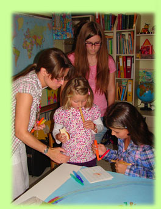
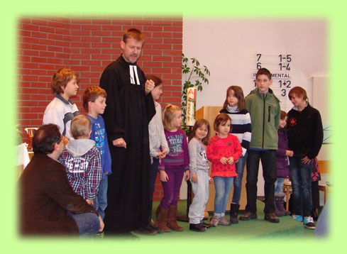
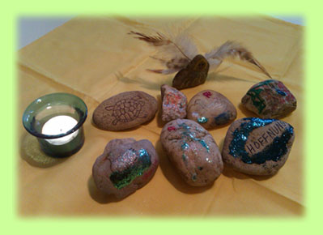

KInder GOttesdienst
Im Kindergottesdienst wird gesungen, getanzt, vorgelesen, gebastelt, Video geschaut, gespielt, Geburtstag gefeiert,...
Zweimal im Monat findet parallel zum Gottesdienst im Keller der Kindergottesdienst statt.
Unser KIGO-TEAM will den Kindern einen Ort bieten, wo sie Gottes Liebe erfahren und ihn persönlich kennenlernen können, wo Freundschaften entstehen und in locker-lustiger Form die Bibel altersgemäß nähergebracht wird.
So kann die Basis für das zukünftige Glaubensleben gelegt und gefestigt werden.
